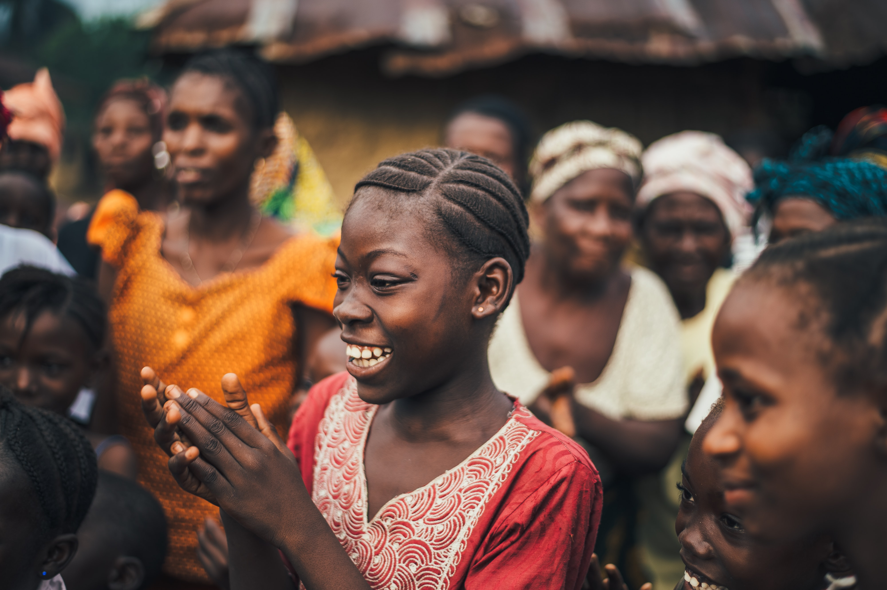

Ampe, a rhythmic girls' game from Ghana, includes clapping, jumping, dancing, singing activities and a particular fashion style, helping bond communities.
The style of clothes is very important to the game of Ampe. Most important of all is that each girl should wear a short and tight skirt facilitating the necessary movement of the legs.Ampe had traditionally been a form of entertainment that many would enjoy at organised events. Ampe was either an addition to a ceremony or as an event on its own.
